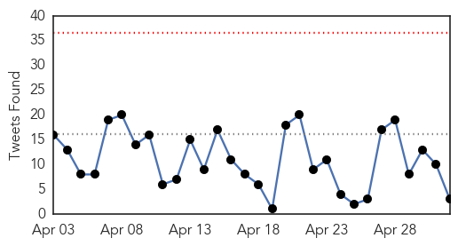
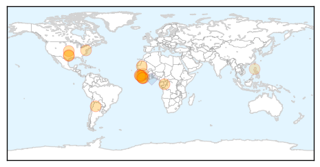

Influenza
30-Day Web Trend
1 alerts, 0 warnings

30-Day Twitter Trend
3 alerts, 0 warnings

Article Locations

Article Confidences

Top Articles:
- 0.946
- U.S. bird-flu outbreak elevates rapidly affecting 16 million; Governor declares “state of emergency” for Iowa
- 0.935
- Bird flu virus raises questions scientists working to answer
- 0.931
- Flu outlook 2013-2014: ‘Don’t hesitate, vaccinate!’
- 0.930
- Iowa becomes 3rd state to declare emergency over avian flu outbreak — RT USA
- 0.916
- State, federal response needed as bird flu wreaks havoc on ag economy
- 0.806
- More Bird Flu Outbreaks in Minnesota, State of Emergency in Iowa
- 0.751
- May 2, 2015 Archives
- 0.751
- May 1, 2015 Archives
- 0.751
- May 1, 2015 Archives
- 0.733
- Iowa governor declares state of emergency due to bird flu outbreak
- 0.725
- Iowa declared state of emergency as bird flu spreads
- 0.628
- Dog flu outbreaks temporarily close shelters, suspend adoptions
Top Tweets:
-
No tweets found for May 02, 2015
Ebola
30-Day Web Trend
0 alerts, 0 warnings

30-Day Twitter Trend
0 alerts, 0 warnings

Article Locations
Article Confidences

Top Articles:
- 1.000
- Woman may have caught Ebola after having sex with survivor in Liberia
- 1.000
- Tarrant County man with symptom tests negative for Ebola
- 0.999
- Ebola Transmission Possible Via Sexual Intercourse
- 0.998
- Ebola test comes back negative on Tarrant County man
- 0.998
- Report: 5 months after infection, man spreads Ebola via sex
- 0.998
- Ending ebola before rainy season is imperative – New Acting Head of UNMEER « Awoko Newspaper
- 0.996
- Liberian Woman Contracted Ebola Through Unprotected Sex
- 0.981
- Woman may have gotten Ebola after sex with survivor
- 0.969
- Ebola : Argentina to ship more drugs to Sierra Leone
- 0.959
- Tarrant County Resident Monitored For Ebola
- 0.948
- Jim Inhofe: A call to support those orphaned by Ebola in West Africa
- 0.936
- Sierra Leone wraps up four-day health and vaccination campaign
- 0.935
- Back to School After the Ebola Outbreak - Sierra Leone
- 0.873
- “Salone will be better after ebola” – President Koroma vows « Awoko Newspaper
- 0.785
- LIBERIA: US Envoy Extols USPHS For Restoring Hope In Health Workers
- 0.641
- IS MEDECINS SANS FRONTIERESSUPERSEDING UNITED NATIONS AGENCIES?
- 0.632
- PopeCrimes& Vatican Evils.FRANCIS=CON-Christ BenedictXVIRatzingerCrimesAgainstHumanityatTheHague: Dumping Dolan! Le Moyne grads must succeed like La Sapienza Univ. students who rejected Benedict XVI-R
- 0.552
- Sierra Leone university holds ceremony amid Ebola fears
Top Tweets:
- 0.886
- Tarrant Co. resident tests negative for Ebola - WFAA http://t.co/ZlXIXszPmK ebola EVD
- 0.796
- Woman in Liberia 'caught Ebola after sex with survivor 6 months later' - Daily Mail http://t.co/wzNatoL6RR ebola EVD
- 0.732
- Liberian Woman Infected With Ebola After Having Unprotected Sex With Male ... - Yibada (English Edition) http://t.co/l0WTeFbBrY ebola EVD
- 0.726
- Woman may have caught Ebola after having sex with survivor in Liberia - The Independent http://t.co/Lusf0aaW2K ebola EVD
- 0.689
- Ebola test comes back negative on Tarrant County man - Fort Worth Star Telegram http://t.co/AhCtaGmBtG ebola EVD
- 0.560
- RT: UN: Ebola must be curbed before West Africa's rainy season. http://t.co/P5FIDIQBkH via EbolaOUTBREAK http:/…
- 0.515
- Two areas, Forécariah in Guinea and Kambia in SierraLeone, account for 76% of all Ebola cases reported in week to April 26. EbolaResponse